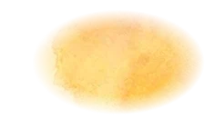
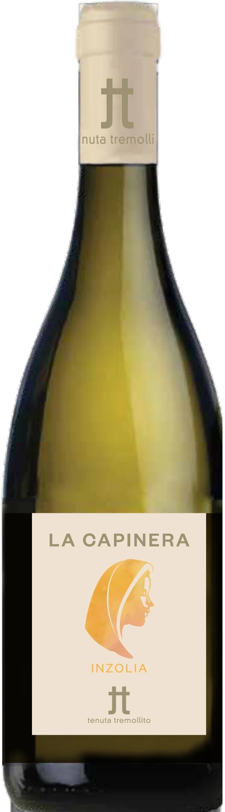

Tenuta Tremollito
LA CAPINERA
Inzolia · IGT Terre Siciliane
Da Storia di una capinera di Verga (1871): Maria, mandata in convento dalla matrigna, trova una breve stagione di libertà in campagna e l’amore per Antonio.
L’Inzolia fu descritta per la prima volta da Cupani nel 1696. Si coltiva quasi solo in Sicilia e si adatta a molti terreni.

Scheda tecnica: LA CAPINERA
Inzolia
La scheda tecnica completa de La Capinera è in arrivo.
- Vitigno
- Inzolia
- Zona di produzione
- Monte Altore, Vizzini (CT)
- Altitudine
- Tra 500 e 600 m s.l.m.
- Tipo di suolo
- Sabbioso, vulcanico, ricco di minerali, a reazione subacida
- Clima
- Di montagna e alta collina, con notevole ventilazione e forti sbalzi termici tra il giorno e la notte
- Sistema di allevamento
- Viti allevate a spalliera
- Densità d’impianto
- Circa 5.500 ceppi per ettaro
IGT Terre Siciliane
Etichetta elettronica · Ingredienti e valori nutrizionali
Le informazioni obbligatorie in etichetta secondo il Regolamento UE 2021/2117. Nessun contenuto promozionale in questa parte della pagina.
| Ingredienti | In arrivo dall’enologo |
|---|---|
| Allergeni | In arrivo (contiene solfiti) |
| Energia per 100 ml | — kJ / — kcal |
| Carboidrati per 100 ml | — g, di cui zuccheri — g |
| Alcol | — |
| Imballaggio e smaltimento | In arrivo |